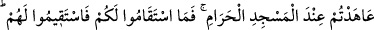
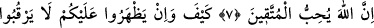
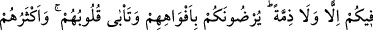
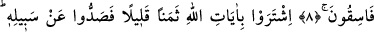
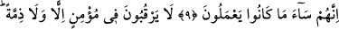
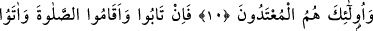
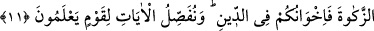
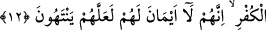

AHİDLERİNİ BOZAN MÜŞRİKLER
7. Mescid-i Haram’ın yanında kendileriyle antlaşma yaptıklarınızın dışında
müşriklerin Allah ve Rasûlü yanında nasıl (mûteber) bir ahdi olabilir? Onlar size
dürüst davrandıkları müddetçe siz de onlara dürüst davranın. Çünkü Allah takvâ
sahiplerini sever.
8. Nasıl olabilir ki! Onlar size galip gelseler, sizin hakkınızda ne ahit, ne de
antlaşma gözetirlerdi. Onlar ağızlarıyla sizi râzı ediyorlar, halbuki kalpleri (buna)
karşı çıkıyor. Çünkü onların çoğu yoldan çıkmışlardır.
9. Allah’ın âyetlerini az bir paraya sattılar da (insanları) O’nun yolundan
alıkoydular. Gerçekten yapmakta oldukları şeyler ne kötüdür.
10. Bir mümin hakkında ne ahit tanırlar ne de antlaşma. Çünkü onlar
saldırganların kendileridir.
11. Fakat tevbe eder, namazı dosdoğru kılar ve zekât verirlerse, artık onlar dinde
kardeşlerinizdir. Biz bilen bir kavme âyetlerimizi böyle açıklıyoruz.
12. Eğer antlaşmalarından sonra yeminlerinizi bozarlar ve dininize saldırırlarsa,
küfrün önderlerine karşı savaşın. Çünkü onlar yeminleri olmayan adamlardır.
Umulur ki küfre son verirler.
“Mescid-i Haram’ın yanında” Mescid-i Harâm’ın yakınında, yâni Mekke-i
Muazzama’nın yakınında olan Hudeybiye’de “kendileriyle antlaşma yaptıklarınızın”